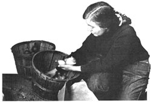
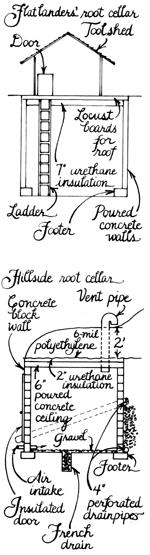
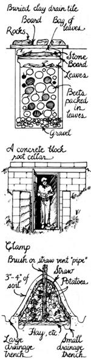
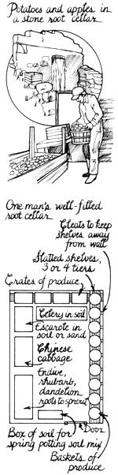

Root Cellaring
How to install a root cellar, including planning your cellar, building an outside or basement root cellar, decentralized storage, stocking the cellar and year-round harvest.
By Nancy and Mike Bubel
September/October 1985
Mother's Handbook
by Nancy and Mike Bubel
Of all the satisfactions to be had from growing and keeping vegetables and fruits, surely none is sweeter than that of selecting from crates of your own stored produce to feed your family in the dead of winter. It's February as we write this, and the ground is ringing-hard. Ice glazes the lane, and the trees bend to the howling of the wind. We'll have fresh vegetables for dinner today, though-not from the store, but from our root cellar. We've just brought up a bowl of potatoes, a pocketful of carrots, a head of Chinese cabbage, a few apples, and a big beet-the makings of a nourishing stew, a crisp salad, and a baked apple dessert.


Maintenance
A root cellar isn't one of those "set-it- andforget-n" devices. To keep it running well, you'll need to do a certain amount of tinkering. In fall and spring, for example, you'll want the vents or window to be wide open at night in order to cool the space. You might wen install a small fan to blow cold air in. At the same rime, because cold air is drier than warm air, the newly cool room might creed additional moisture, perhaps in the form of water sprinkled on a gravel floor. During the coldest days of winter, monitor the temperature of the cellar to be sure it stays above freezing. Keep the thermometer on the lowest shelf while outdoor temperatures are frigid, so you'll know how Iow the mercury goes. (And in mild weather, keep it higher or where the bulk of your produce is stored, so you'll know how warm the cellar gets.) Some folks keep a 40-watt light bulb burning in the cellar during nights of subzero cold to warm the air just a bit.
To keep track of humidity in the cellar, you might want to mount a hygrometer-a moisture indicator- along with your thermometer. Although not an essential piece of equipment, this inexpensive instrument can help you fine-tune the operation of your storage )-oom. Most hardware stores carry hygrometers. If the room is too damp, increase air circulation to admit dry, cool air and vent damp air. I b add humidity, moisten the floor gravel and set shallow pans of water in several spots in the room. Droplets of condensation on the ceiling don't necessarily indicate excess humidity. Moisture precipitates sooner from cold air, which is more quickly saturated than warm air. If heavy condensation drips too much on the vegetables, you can spread a sheet of plastic over them so they don't get wet.
Check over your hibernating vegetables once a week (except those buried underground!) and cull any that are deteriorating. And to discourage the molds and other decaypromoting organisms that like to live in damp earthy places, sweep and air out your root cellar each summer. Put crates and baskets in the sun for several days, and pitch out any shriveled produce you find lurking in the corners.
STORAGE CONDITIONS FORDIFFERENT FRUITS AND VEGETABLES
COLD AND VERY DAMP
(32-40°F and 90-95% relative humidity)
Beets
Carrots
Celeriac
Celery
Chinese cabbage
Hamburg rooted parsley
Horseradish
Jerusalem artichokes
Kohlrabi
Leeks
Parsnips
Rutabagas
Salsify
Scorzonera
Turnips
Winter radishes
COLD AND DAMP
(32-40°F and 80-90% humidity)
Apples
Cabbage
Cauliflower (short-term)
Endive, Escarole
Grapefruit
Grapes
Oranges
Pears
Potatoes
Quince
COOL AND DAMP
(40-50°F and 85-90% humidity)
All short-term: 1-4 weeks
Cantaloupe
Cucumbers
Eggplant
Sweet peppers
Tomatoes, ripe
Watermelon
COOL AND DRY
(35-40°F and 60-70% humidity)
Garlic
Green soybeans in the pod (short-term)
Onions
MODERATELY WARM AND DRY
(50-60°F and 60-70% humidity)
Green tomatoes (may be kept up to 70°F)
Hot peppers, dried
Pumpkins
Sweet potatoes
Winter squash
All this-and more-can be yours without boiling jars or filling freezer bags. No slicing, no sweetening, no packaging or processing. That's the beauty of the homely root cellar: It uses natural cold to chill and preserve storage vegetables. We still can tomatoes and peaches and we freeze peas, because these methods seem to be the most effective for those foods, but for most root vegetables, some members of the cabbage family, and several fruits-especially apples-you can't beat good old cold storage.
Stashing foods in the root cellar is simple once you've done the work of enclosing the space. Most people think of the classic root cellar as an underground or hillside cave, but we'll tell you here about several other practical keeping rooms, as well, along with a bunch of improvised storage options for those of you who prefer to start (or stay) small.
To understand why root cellars work, consider first that vegetables are still alive after they've been harvested. They even breathe-not as actively as you and we do, of course, but chemically their respiration is like that of humans: They take in oxygen and release carbon dioxide, water vapor, and heat, and they'll continue to do so until we cook or eat them or until they decay. At low temperatures, vegetables use up less of their storage reserves because the cold slows their respiration. Cold air also helps to counteract the deteriorating effect of the "body heat" which is a by-product of respiration. (At 32°F, one pound of broccoli produces two Btu of heat a day, according to USDA reports.) Chilling is important for yet another reason: Because cold air absorbs less moisture than warm air, vegetables dry out more slowly, and thus stay in better condition, when they're kept cold.
How cold and damp should your cellar be? Most root vegetables will keep longest at temperatures between 32° and 40°F with 90 to 95% humidity. We've visited root cellars, though, where the temperature stayed closer to 45° and the stored food kept well until late winter. So use the ideal figures as something to aim for, but don't worry too much about small variations. As long as the food doesn't freeze, it will keep better in cold storage than on your kitchen shelf. True, if you can keep the stored crops only moderately cool, they won't last the winter, but extending your garden-vegetable-eating season by as little as two months rates as a real achievement. And if you build a room-size food hideaway, you should be able to keep at least some fruits and vegetables from fall harvest clear through until spring and sometimes longer. We've even had a few beets and sweet potatoes remain in usable shape until the following fall-a year from when they were dug!
Planning Your Root Cellar
If you have a dirt-floored cellar room in your house, you've got a good start for root storage right there; all you need to do is enclose and insulate the space. Or perhaps there's a north- or east-facing hill on your property where you could dig into the slope and line the space with stone or concrete block. On flat land, you could go straight underground and dig a cavern, insulate and roof it, and then top it with a shed. Many midwestern gardeners build mound-topped underground food closets which double as storm shelters. You can even buy a prefabricated fiberglass shelter/storage room, have it delivered to a bulldozed hole, and then call the dozer back to pile a soil bank over it-an almost-instant root cellar! One source for fiberglass cellars is The Homestead Company. [EDITOR'S NOTE: See Mom's Marketplace on page 124.]
Whether your food-keeping spot is in your house or under a hill, here are some things to keep in mind as you plan how to enclose the space:
Earth is a good insulator because the soil temperature underground stays fairly constant. At a depth of about 12' in wet soil, the temperature changes only about 7°F throughout the year, remaining close to the average air temperature for that locality. In our state of Pennsylvania, that's about 52°F. Make the most of the earth's temperature-moderating influence by placing your cellar on the cooler north side of a building or hill away from the warming power of the sun's rays.
Cold is vital to long storage life. Next comes humidity, to prevent shriveling of produce from loss of moisture. The third essential is ventilation. Include both air-intake and air-exhaust pipes so you'll be able to chill the cellar by admitting cold night air and by venting warm air (along with ethylene gas given off by some ripening fruits). Good air circulation will help to control condensation of moisture on the vegetables, which is more copious in easily saturated cold air. For the most effective air-flow pattern, the air must move as much as possible. Since warm air rises and cold air sinks, install the cold-air intake near the floor and the exhaust pipe near the ceiling. Put the openings on opposite ends of the cellar so the air must cross the room to get out. And always elevate crates a few inches above the floor so that air can circulate underneath them.
Keep the room dark; light encourages sprouting in potatoes. You might want to wire your cellar for a light bulb, though, so that you can see what you're getting when you go delving there. Use a porcelain outdoor socket and outdoor wiring.
Close all spaces as tightly as you can to keep mice out. This means screening all vent pipes and windows and making sure the door fits tightly.
Don't plan to keep any jars of canned goods in your main vegetable storage area. If it's as damp there as it should be to keep the produce in good shape, the jar lids will rust and then the seals will break. Canned goods need a cool, dry spot.
What size should your keeping room be? Many of the cellars we visited in researching our book Root Cellaring were 8' X 10' or larger, but few of them were filled to capacity.
(After all, a 5 ' X 8' space can hold 30 bushels of produce.) If you intend to keep vegetables such as celery in buckets of soil, an 8' X 8' cellar will probably supply enough space.
Shelving multiplies the useful space in your cellar. Use only rot-resistant woods; the best are locust, cedar, and cypress. One-inch oak planks or 2" Douglas fir planks should last long enough to be worth installing, but don't use pine at all unless it's free and you don't mind replacing it. Shelves should be slatted for good air circulation and should have cleats at intervals along their back edges to keep them one or two inches away from the wall. We would not recommend using pressure-treated or creosoted wood in any room that will be used to store food. There's no sense growing food carefully without poisons and then storing it where it might absorb chemical fumes.
Once you've "borrowed" cold-from the earth in fall and from outside air in winter-you'll want to keep the chill in. To do this, insulate any surface of the storage space that is likely to be unduly warmed (the ceiling, interior walls, and door of a basement room) or chilled (the door and ceiling of an underground root cellar). Exterior walls surrounded by earth need no insulation. For walls that do, choose one of the rigid foam insulation boards rather than fiberglass, which gets soaked by condensation. Old-time gardeners used dry leaves, sawdust, wood shavings, straw, and even cinders to insulate their produce hideaways.
Don't concrete the floor of your cold-keeper. The constant cooling and humidifying influence of a dirt floor is one of the secrets of good vegetable storage. If you're enclosing a basement room that already has a cement floor, use it for a few seasons to check it out. If the pantry stays too dry, spread an inch of gravel on the floor. Then you can dampen the gravel to increase air moisture.
Building an Outside Root Cellar
Whatever you use to enclose your cellar, your first step after choosing a site will be to dig a hole or hire a backhoe to scoop out a space, either directly underground or set into a hill. Next, install a drainpipe in your cellar floor. Then make forms to support a poured-concrete foundation on which the walls will be built. The foundation should be twice as wide as the walls will be thick (16" for standard 8" X 16" concrete blocks). If you want to mix your own concrete, here's a recipe for a good strong mixture: 1 part cement, 2-1/4 parts sand, 3 parts gravel, and just enough water to make it spreadable. If you have premix delivered, be sure to order enough for the job. Running out of concrete in mid-pour is, as our country neighbor says, embarrassing!
Now, after marking corners carefully with stakes and crossed string, begin to lay block on the footers, starting at the corners and gradually filling in the sides. A good mortar mix to cement the blocks or stones together is 1 part cement, 1 part lime, and 4 parts sand, mixed with enough water to make the "mud" plastic. Stack the walls 6-1/2' to 8' high. Then build a form to support a roof of poured concrete: a piece of 3/4" plywood supported by joists set on beams which rest on 4 X 4 posts. (The joists can be 2 X 4s set 16" apart or 2 X 6s 24" apart. The beams should be made from 2 X 6s. And you should set the 4 X 4 posts no farther than four feet apart in all directions.) Top the plywood with a sheet of 6-mil plastic and make a form of 2 X 6 lumber to run around the exposed perimeter of the board to contain the thickness of the ceiling concrete. Embed 5/8" steel rebar in an 18" to 24" grid in 'the bottom half of the 6" concrete roof. If you construct your walls of poured concrete rather than of blocks, be sure to brace the forms within the room firmly. If they collapse, you may be stuck with a buried free-form "sculpture" and no space!
Your intake and exhaust pipes should be set in place through holes in the form boards berore the ceiling or walls are poured. Extend the outlet pipe several inches above ground level for more complete air exhaust. Leaving it level with the roof would allow a blanket of stale air to remain at ceiling level in the cellar. Some folks who operate root cellars in the Far North have told us that instead of using the standard 4" cold-air pipe, they've put in two smaller ones so that one could be capped during spells of frigid weather. (An alternative would be to make a doughnut-shaped "hole-reducer" plug.) It's a good idea to put a chimney cap on the exhaust pipe to block entering cold air that could act as a lid to keep warm air from moving up and out of the pipe. Wrapping the aboveground pipe with some sort of weatherproof insulating material also helps to increase air circulation, because rising air doesn't get chilled and sink so readily when the pipe is kept relatively warm.
To carry off excess rainwater, run a perforated 4" drainpipe around the outer walls of the cellar at floor level, over a 3" base of gravel. And to drain groundwater that might freeze, expand, and crack the walls, lay a second perforated pipe at a point 2' to 3' below the soil's surface (about halfway through backfilling). After you've finished backfilling around the cellar, fasten a 2" rigid foam insulation board on the outside surface of the roof, using construction cement. Top that with a sheet of 6-mil poly, shovel on 2' to 4' of earth, and scatter some grass seed on the roof to help prevent the soil from washing away. (On one farm we visited, the family cow was tied on the root cellar roof each summer to keep the grass clipped.) Build, buy, or scrounge a good solid door, make some shelves, gather some crates, and then go and dig your vegetables!
Building a Basement Root Cellar
A basement root cellar might not be quite as cold and damp as an excavated cellar-especially in fall and spring-but it's still a plenty good keeping-space, and it has the advantage of being easy to build. A few rainy weekends spent sawing and hammering will earn you a cold-storage room that'll keep your garden produce over the winter for years to come.
An old farmhouse we once lived in had a dirt-floored basement that made a great root cellar. The space stayed cold because we heated the house with a wood-burning box stove on the first floor. In another house, this time with central heating, we found we could store root vegetables in a large, unheated basement closet. If your house has a separate cellar room on the northeast (coldest) or the northwest (next best) side, all you need to do is insulate the door, the ceiling, and the inside walls. Leave the exterior walls uninsulated so the deep-ground cold can seep in.
In a heated basement that is not divided, you could partition off a room on the cold northeast corner. Start by nailing 2 X 4 sills to the floor around the perimeter of the room-to-be. (On a concrete floor, predrill the holes in both wood and concrete, run a bead of construction glue around the bottom edges of the 2 X 4s, and fasten the sills to the floor with lag bolts.) Then toenail 2 X 4 studs to the plate on 16" centers. Begins to look like something now, doesn't it? Next, nail a 2 X 4 header to the tops of the studs, and staple a 6-mil poly vapor barrier to the inner surface of the studs. Top this with panels of Styrofoam or urethane sandwiched between the poly and an inner wall of somewhat moistureproof material such as Aspenite, Formica, or fiberglass. You can also use scrap pieces of aluminum press plates, which are available at little cost from local newspaper publishers. If you're short of space, you could fit the insulation boards between the studs. In that case, put the vapor barrier on the outside surface of the studs (it should always be on the warm side of the insulation). The outer walls that face the basement may be made of any material you like to look at; they won't be affected by the pantry's dampness. Finally, install vent pipes, insulate the door and ceiling, make some shelves, and plan a cellar-warming party. If your root room has a window, shade and screen it, but keep it accessible so you can open it at night to cool the space when necessary. If, when you start to use the room, you find that a single window doesn't provide enough ventilation, you can run a cold-air intake pipe from outside down to floor level and across the room. (You want that air to move!)
Decentralized Storage
If you can muster the time, space, and materials to build a step-in root cellar, you'll probably be glad you did. Suppose, though, that you're living in a rented house, or have only a limited amount of surplus produce from your garden, or need all your cash for land payments. What can you do then with that extra row of carrots, the half-bushel of potatoes, or the baskets of beets or apples you'd like to save for winter munching? Cheer up-you still have plenty of options beyond the whole-hog, full-scale root cellar.
Begin by prowling around your house for likely closets and cubbyholes. An unheated porch is great for keeping onions and sweet potatoes until early winter. A spare bedroom or cold attic makes a fine winter-squash dormitory. Perhaps there is a space under your porch where produce could be cold-stored until subfreezing weather sets in. A north-side closet on an exterior wall could extend your apple-eating season by a month or two. One man we visited even built a drawer under each basement step to hold a small amount of potatoes or onions.
Sheds and garages are good places to store root and bulb vegetables in late fall. We keep our onions in our cool log garage until nights turn really cold in December and then bring them indoors to an unheated spare room where at least some of them keep until spring. In areas with moderate climates, baskets of apples buffered by hay bales on all sides will often keep until Christmas in a garage. And if you must save a late-ripening melon for your Thanksgiving fruit cup, stash it in a bin of oats in the barn-an old trick that still works.
Country folks who had open-topped wells would often hang buckets of apples above the water level in the cavity, suspended from 2 X 4's set across the top edges of the pit.
The simplest of all cold-storage schemes is to leave some root vegetables right in the row. An insulating layer of leaf-filled bags or of hay bales settled on top of the row will extend the digging season. Raised-bed gardeners have the advantage here because their well-drained garden soil stays diggable longer. Even after the ground freezes too hard to dig, your winter blanket will help preserve such roots as carrots, salsify, parsnips, and Hamburg rooted parsley until early spring. If you can plant your overwintering root crops in an intensively planted bed instead of in single rows, you'll find that they are easier to protect (and find!). Mice like these cozy set-ups too, so you might want to spread a sheet of hardware cloth over the crop before piling on the hay. Dig these root crops as early in spring as you can, because the quality of the food is best before new green tops start to sprout. If you've even eaten freshly dug parsnips in March, after a winter's worth of freezes has changed much of their starch to sugar, you know that's what sweet is!
An hour or so of digging will earn you another outdoor vegetable-storage space-the garden trench. This is especially useful for celery . . . and also for cabbages, which don't take kindly to being piled in a heap, and which tend to "perfume" the house with their distinctive aroma when kept indoors. Dig a trench about 2' deep and wide enough to allow room for the produce. Save the fine soil in a separate pile. Then dig up your celery, Chinese cabbage, and cabbage, and immediately replant them in the trench, using the fine soil to cover the roots. You could also place heads of cabbage on a 3" layer of straw in the bottom of the trench, keeping the roots upright but not backfilling the hollow with dirt. In either case, cover the trench with a board and then pile an 18" layer of organic insulation over this roof. Your effort will be rewarded when you dash out on a frosty day to grab a quick head of cabbage for a hearty early-winter soup.
Another time-tested on-the-spot food-keeper is the clamp, which is an earth-covered mound of vegetables. For centuries, people who had no choice but to be self-reliant have fed their families on apples and root vegetables kept in carefully constructed clamps. When Mike was a boy, his family relied on clamps full of potatoes to sustain them through the harsh flatland winters in Poland. Select a dry, well-drained spot for your clamp, and prepare the ground by first raking off leaves and spent plants and then digging a shallow, circular pit 8" to 12" deep. Next, shovel out a narrow drainage channel around the perimeter of the hole, line the pit with a 3" layer of hay, straw, or leaves, and build a cone-shaped pile of' produce up to 2' or 3' high. Because a clamp must be emptied once it's opened in midwinter, you might want to make several small clamps and put a mixture of several kinds of vegetables-carrots, turnips, rutabagas, potatoes, beets-in each. Apples should be kept in a separate clamp-not mixed with the vegetables. To ventilate the mound, stack the vegetables around a central air shaft-either a perforated pipe or a bundle of straw-and let the end of this air conductor stick up several inches above the pile. Now tuck the vegetables in under a 6" to 12" layer of hay or straw, covered by a 4" coat of dirt firmed down well as you apply it. Don't cover the vent pipe. Finally, dig a second drainage trench around the now-covered pile. The clamp may riot come with a warranty, but you won't need a loan to get as many of the mounds as you need, and they won't add any numbers to your electric meter, either.
The earth's insulating mass can help you to preserve garden food in other small-scale ways. You can bury barrels, 18"- to 24"-wide clay drain tiles, or clean trash cans in the ground, and fill them with food. Dig a hole wide enough to accept the can (tile, barrel, or whatever) and about 10" deeper than the height of the container. Toss 3" of gravel into the hole, settle the food-safe in the space, and then pack alternating layers of root vegetables and straw into the cavity. Stuff more straw into the top 5" of the buried pantry, add a board held down with a stone, and then another 12"-thick wad of straw or hay topped by a second, larger, board.
Some folks even bury dead refrigerators or freezers as instant mini-root cellars. The already-insulated, mouseproof boxes make fine food-keepers, but just be sure to remove the lock for safety, and-while you have your tools out, drill a hole for a screened 1" to 2" vent pipe to help circulate air. When we used a defunct fridge to store apples, we parked it above ground next to a concrete-block wall, covered it with a large rubber mat so rain wouldn't seep in, and surrounded it on all exposed sides with hay bales. The apples stayed in good shape until January.
Sometimes it takes a few seasons of experimenting with different vegetable varieties, various storage methods, and several packing materials before you come up with an arrangement that suits your situation. Keep records so you'll be able to track down what you did that worked best. One of the reasons we're so fond of root cellars is that, as we see it, they represent a true folk craft-an often-ingenious response to a particular set of local conditions.
Stoc king the Cellar
Many of the most reliable; winter-keeping vegetables are biennials-plants that flower and set seed during their second growing season-so they're natural programmed for long storage. When we try to keep beets, cabbage, and turnips, for example, to eat over the cold months, we're not breaking rules of nature, but rather cooperating with what you might call the vegetables' intentions-to live to see another spring so they can reproduce.
In addition to the sturdy root and cole vegetables that are obvious candidate;. for root cellaring, you can also store celery, leeks., brussels sprouts, pepper, grapes . escarole, and citrus fruits in your cold room for shorter periods ranging from two to eight weeks depending on the type of vegetables and the conditions. Onions, garlic, squash, pumpkins, sweet potatoes, and green tomatoes will last until spring if you keep them dry and cool. The place for these good foods is in an unheated bedroom or a cool closet rather than in the kind of damp, cold place where apples and root vegetables keep best.
For whatever produce you stash in your keeping room, there are several rules of thumb that will help keep the food sound and healthy till you're ready to eat it.
[1] Treat all winter-keeping vegetables gently at all stages of harvest, preparation, and storage. Bruised produce spoils sooner.
[2] Store only your best fruits and vegetables. Cut, bruised, or diseased vegetables not only spoil more quickly but also tend to encourage spoilage in neighboring foods.
[3] Pick foods at maturity-neither underdeveloped nor tough and overripe.
[4] Harvest during a dry spell if time permits.
[5] Leave vegetables in the garden as long as possible, but keep an eye on the weather and rescue them before black frost hits. Beets, for example, can stay out well past the first light frosts but should be dug before night temperatures dip to around 24°F unless their exposed shoulders are well protected by mulch. Low temperatures in fall encourage vegetables to store more sugars and starches than water, making them better keepers.
[6] Choose varieties of vegetables that are well adapted to storage: Long Season beets, Penn State Ballhead cabbage, and Kennebec potatoes, for instance.
[7] After digging them, chill root vegetables as promptly as possible. Don't leave them out in the sun.
To prepare root vegetables for winter storage, simply trim off the green tops, leaving a one-inch stub (if left on, the top growth will decay and encourage the deterioration of adjacent roots). Take care not to cut the root flesh, and don't cut off root tips, either; any skin break invites spoilage. Having done all this digging, selecting, and trimming, you'll be glad to hear that you needn't wash vegetables before packing them away; in fact, it's better not to clean them. Just gently brush off any large clumps of soil that may cling to them.
Some root-cellar owners simply pile their apples and root vegetables in crates or baskets. Others prefer to pack the produce in leaves, hay, sawdust, or moss to help prevent drying, especially if using a basement room, which might not be as damp as an outdoor cellar. When we kept turnips, rutabagas, carrots, and beets in a cold, dirt-floored cellar in the old house on our farm, we always packed them in dry leaves or sawdust. Sand can also be used for winter vegetable bedding, but it is not as easy to wash off as sawdust.
Certain vegetables must be cured in order to keep well. After clipping off their tops-leaving a one-inch stub-expose garlic and onions to the sun for a week after digging them, and then spread them loosely in shallow boxes or hang them in net bags or old panty hose. Cure pumpkins and squash (except acorn squash) in the sun for two weeks after picking them so they'll develop a hard rind. Always leave stems on. And keep freshly, harvested sweet potatoes in a warm, damp place-aim for 80° to 85°F and 90% humidity-to toughen their skins and encourage healing of small scratches. I cure my sweets in crates near the wood cookstove, with a damp newspaper spread over each crate. Then, after seven to ten days of curing, I wrap the potatoes individually in newspaper, sort them for size, pack them in cartons, and keep them in a cool room. Curing white potatoes isn't essential as it is with sweets, but it's a good idea to spread the spuds out in a sheltered spot-about 60° to 75°F-for a two-week skin-toughening program before piling them into crates in the root cellar. Keep them in the shade, though; sun will turn them green (and toxic).
Some leafy vegetables can be replanted in buckets of sand, soil, or moss in the root cellar. I've had good luck with Chinese cabbage, escarole, and leeks. Celery is a good candidate for this treatment too. Chinese cabbage has kept for us until February-the crunchy fresh inner leaves hidden behind an outer layer of wilted, paper-dry wrapper leaves.
The Year-Round Harvest
For us, root cellaring is more than a winter convenience. It's a way to keep carefully grown, unsprayed food on our menu all year long. It's a time-saver in summer because we have less need now to can and freeze so much of our garden's bounty. We don't need to buy so many jars and lids, either, or to run the stove so long in August. But best of all, it makes us feel good-prepared, provided for, and well nourished-when we can go "shopping" in the cellar and return with a basket of fresh food, the fruit of our efforts at gardening and putting-by.
Whether you use a stony-cold cave, a basement pantry, or a buried box, we wish you joy in the growing, satisfaction in the keeping, and health in the eating.
EDITOR'S NOTE: The Bubels' 297 page hardcover book, Root Cellaring: The Simple No- Processing Way to Store Fruits and Vegetables, is available for $12.95 postpaid from Rodale Press, 33 E. Minor St., Emmaus, PA 18049.
|
 |
 |
 |
|
 |
|
|